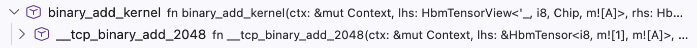
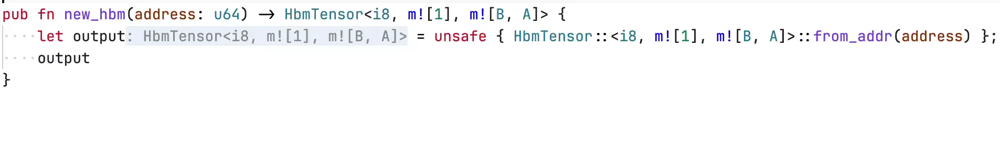
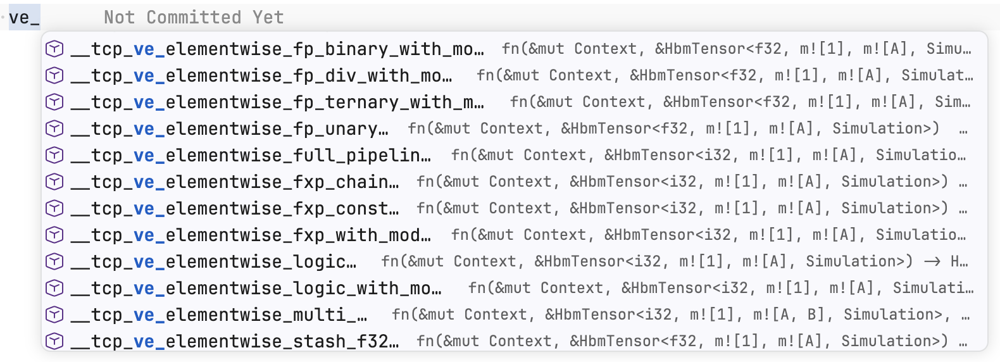
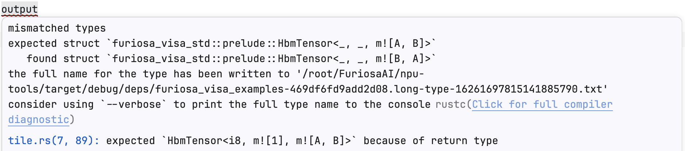
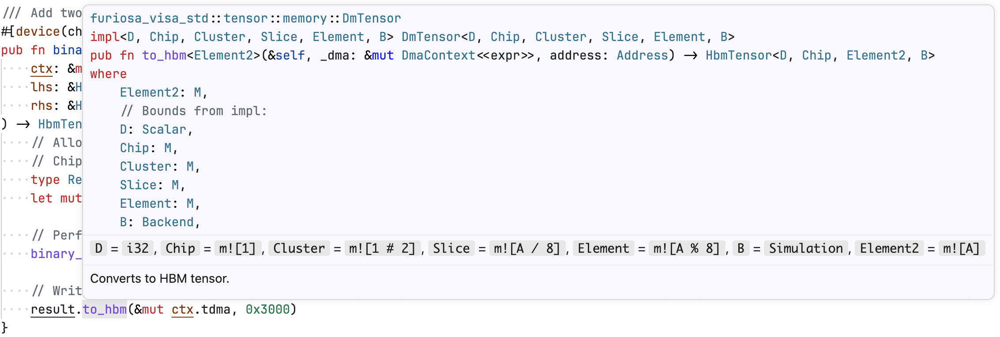
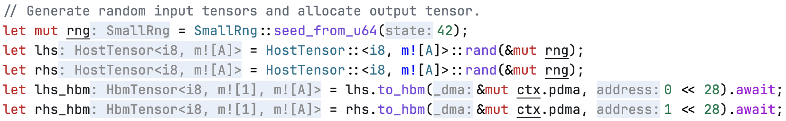

언어 서버(Language Server)
언어 서버 프록시(language-server proxy)는 IDE 탐색(navigation), 진단(diagnostics), 읽기 쉬운 매핑 표현식 자료형(mapping-expression type)을 제공합니다. 편집기에 표시되는 형태는 자료형 검사(type checking)를 바꾸지 않습니다.
이 도구 문서는 매핑 표현식(mapping expression)의 IDE 지원을 제공하는 rust-analyzer 프록시(proxy), furiosa-rust-analyzer-proxy의 설치와 설정을 설명합니다. 빠른 시작(Quick Start)은 다른 개발 도구와 함께 이 도구를 소개하며, 이 절은 설치·설정 절차를 자세히 다룹니다. 프록시는 내부에서 rust-analyzer를 실행하여 일반 Rust 언어 서버 통신(language-server traffic)을 전달하고, 편집기에 보낼 결과를 다시 작성하여 매핑 자료형을 m![...] 표기법으로 표시합니다.
설치(Installation)
-
rust-analyzer가 설치되어 있고PATH에서 찾을 수 있는지 확인하세요. 프록시(proxy)는 이 원본(upstream)rust-analyzer프로세스를 실행하여 표준 Rust IDE 기능을 제공합니다. -
GitHub 릴리스(releases)에서
furiosa-rust-analyzer-proxy실행 파일(binary)을 내려받고 실행 권한을 부여하세요.curl -L -o furiosa-rust-analyzer-proxy \ https://github.com/furiosa-ai/furiosa-opt/releases/latest/download/furiosa-rust-analyzer-proxy-v<VERSION>-x86_64-unknown-linux-gnu chmod +x furiosa-rust-analyzer-proxy -
IDE에서 기본 언어 서버(language server) 대신 내려받은 실행 파일(binary)을 사용하도록 설정하세요. 예를 들어 VSCode에서는
settings.json을 다음과 같이 수정합니다.{ "rust-analyzer.server.path": "/path/to/furiosa-rust-analyzer-proxy", "rust-analyzer.inlayHints.maxLength": null // recommended to reduce '_' truncation }
환경 변수(Environment variables)
환경 변수(environment variable)로 언어 서버(language server)를 설정할 수 있습니다. 예를 들어 VSCode에서는 settings.json을 다음과 같이 수정합니다.
{
"rust-analyzer.server.extraEnv": {
"ENV_NAME": "env_value"
}
}
FURIOSA_RUST_ANALYZER_PROXY_UPSTREAM: 프록시(proxy)가 실행할 원본(upstream)rust-analyzer실행 파일(binary)의 사용자 지정 경로입니다. 기본값은PATH에 있는rust-analyzer입니다.
기능(Features)
프록시(proxy)는 표준 Rust IDE 기능을 rust-analyzer에 맡기고, 편집기에 표시할 결과의 매핑 표현식(mapping expression)을 다시 작성합니다.
호출 계층(Call Hierarchy)
호출하는 쪽(incoming)과 호출되는 쪽(outgoing)의 호출 계층(call hierarchy)을 보여 줍니다. 계층 항목에 표시되는 함수 상세 정보(function detail)는 매핑 표현식(mapping expression)으로 변환됩니다.

코드 작업(Code Actions)
빠른 수정(quick fix), 리팩터링(refactor), 그 밖의 편집기 작업(editor action)을 제공합니다. 작업 제목(action title)과 수정 텍스트(text edit)를 매핑 표현식(mapping expression)으로 변환합니다.

코드 자동 완성(Code Completions)
이름(name), 메서드(method), 함수(function), 자료형(type), 코드 조각(snippet)의 자동 완성 항목(completion item)을 제공합니다. 항목 이름(label), 상세 설명(detail text), 수정 텍스트(text edit)를 매핑 표현식(mapping expression)으로 변환합니다.

진단(Diagnostics)
rust-analyzer와 rustc의 진단(diagnostic)을 제공합니다. 진단 메시지와 관련 정보를 매핑 표현식(mapping expression)으로 변환합니다.

마우스 올리기 정보(Hover)
기호(symbol)에 마우스를 올리면 추가 정보를 보여 줍니다. 추론된 자료형(inferred type), 함수 시그니처(function signature), 문서(documentation) 등의 호버(hover) 내용을 매핑 표현식(mapping expression)으로 변환합니다.

인레이 힌트(Inlay Hints)
소스 코드 안에 추가 정보를 함께 표시합니다. 인레이 힌트(inlay hint)를 매핑 표현식(mapping expression)으로 변환합니다.
도움말(Tip) 가장 정확하게 변환하려면
rust-analyzer.inlayHints.maxLength를null(길이 제한 없음)로 설정하세요. 긴 인레이 힌트(inlay hint)가 잘려 '_'로 표시되는 경우를 줄일 수 있습니다.

시그니처 도움말(Signature Help)
호출을 작성하는 동안 함수 시그니처(function signature)와 현재 매개변수(active parameter)를 보여 줍니다. LSP 클라이언트(client)가 반환하는 오프셋 기반 매개변수 이름(offset-based parameter label)을 포함하여, 시그니처 이름(label), 매개변수 이름, 문서를 매핑 표기법(mapping notation)으로 다시 작성합니다.

주의점(Caveats)
사용자 정의 자료형(user-defined type)의 이름이 내부 매핑 구성 요소(mapping component)와 같으면, 언어 서버(language server)가 이를 매핑 표현식으로 잘못 해석할 수 있습니다. 예를 들어 사용자 정의 구조체(struct) Symbol<T>를 만들면 IDE에서 실수로 m![T]로 표시할 수 있습니다. 이는 UI 표시 문제일 뿐이며 다른 LSP 동작에는 영향을 주지 않습니다.
furiosa-rust-analyzer-proxy, a proxy for rust-analyzer that provides IDE support for mapping expressions.
Quick Start introduces this tool alongside the other development tools; this section gives the installation and configuration steps.
The proxy runs rust-analyzer underneath, forwards normal Rust language-server traffic to it, and rewrites editor-facing results so mapping types are displayed in m![...] notation.InstallationEnsure rust-analyzer is installed and available in your PATH.
The proxy launches this upstream rust-analyzer process to provide standard Rust IDE features.Download the furiosa-rust-analyzer-proxy binary from the GitHub releases and make it executable:curl -L -o furiosa-rust-analyzer-proxy \
https://github.com/furiosa-ai/furiosa-opt/releases/latest/download/furiosa-rust-analyzer-proxy-v<VERSION>-x86_64-unknown-linux-gnu
chmod +x furiosa-rust-analyzer-proxy
settings.json:{
"rust-analyzer.server.path": "/path/to/furiosa-rust-analyzer-proxy",
"rust-analyzer.inlayHints.maxLength": null // recommended to reduce '_' truncation
}
settings.json:{
"rust-analyzer.server.extraEnv": {
"ENV_NAME": "env_value"
}
}
FURIOSA_RUST_ANALYZER_PROXY_UPSTREAM: Custom path to the upstream rust-analyzer binary that the proxy launches.
Defaults to rust-analyzer in PATH.FeaturesThe proxy delegates standard Rust IDE features to rust-analyzer and rewrites mapping expressions in editor-facing results.Call HierarchyProvides incoming and outgoing call hierarchy views.
Function details shown in hierarchy entries are converted into mapping expressions.Code ActionsProvides quick fixes, refactors, and other editor actions.
Action title and text edits are converted into mapping expressions.Code CompletionsProvides completion items for names, methods, functions, types, and snippets.
Completion labels, detail text, and text edits are converted into mapping expressions.DiagnosticsProvides diagnostics from rust-analyzer and rustc.
Diagnostic messages and related information are converted into mapping expressions.HoverShows additional information when hovering over a symbol.
Hover contents such as inferred types, function signatures, and documentation are converted into mapping expressions.Inlay HintsShows additional information inline with the source code.
Inlay hints are converted into mapping expressions.TIP For the most accurate conversion, set rust-analyzer.inlayHints.maxLength to null (unlimited length).
This reduces how often long inlay hints are truncated into '_'.Signature HelpShows function signatures and the active parameter while writing a call.
Signature labels, parameter labels, and documentation are rewritten to use mapping notation, including offset-based parameter labels returned by LSP clients.CaveatsThe language server may incorrectly interpret user-defined types as mapping expressions if they share names with internal mapping components.
For instance, if you define a custom Symbol<T> struct, the language server might mistakenly display it as m![T] in your IDE.
This is purely a UI display issue and does not affect the other LSP behaviors.